8/19/2022:
Today I leanred how to start a website.
I also carried Jonah in league and got to Bronze 1.
8/22/2022:
I demoted from Bronze 1 over the weekend.
8/23/2022:
I did FLL for robotics yesterday after school. It was fun to watch the kids build lego and I got to build legos as well.
8/24/2022
Nothing really happened today.
September
9/2/2022: On wednesday I had a science test and got a 80% and had a math test today. I also carried Jonah in league once again.
I did FLL as well which was fun. For engineering we had a make a CAD home appliance and I made a fridge.
9/8/2022: Over the Labor Day weekend I went to my friends house and swam for a couple of hours then watched Silent voice and Bird Box.
This week has been really hot. Like 100 degrees everyday. I took a math, english, and science test today. I don't think it went well.
I started to play league more and ranked up.
9/16/2022: I had a Korean and English test this week and I think I had failed both test.
We started to do our Rube Goldberg machine in Intro to Engineering and made a carboard diagram. We also had a paper boat challenge, but my team's boat sank first because it got hit.
I did FLL this week, and it was fun.
I also watched the varsity girls tennis game with my friends because they play tennis.
9/26/2022: Our team had finished the Rube Goldberg machine and presented it to Mr.Poole. I didn't do anything last week.
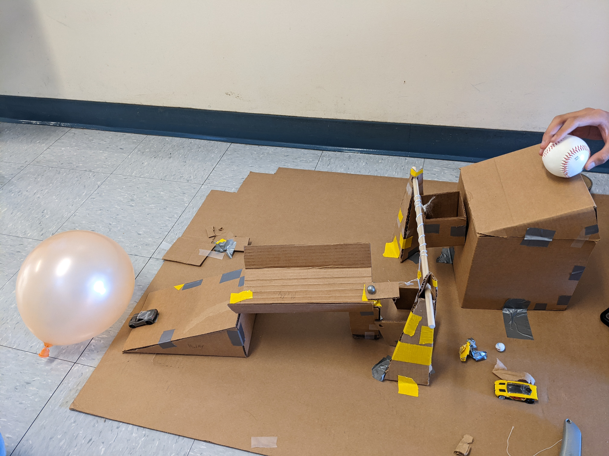
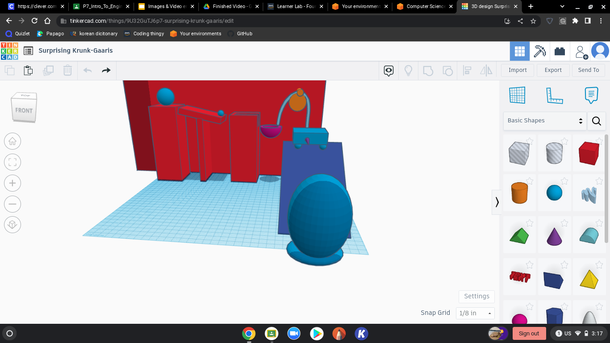
9/30/2022: We made a prosthetic in CAD. I made a prosthetic of a penguins leg. My favorite show is Wonder Pets. My favorite song my Iu is Bbibbi.
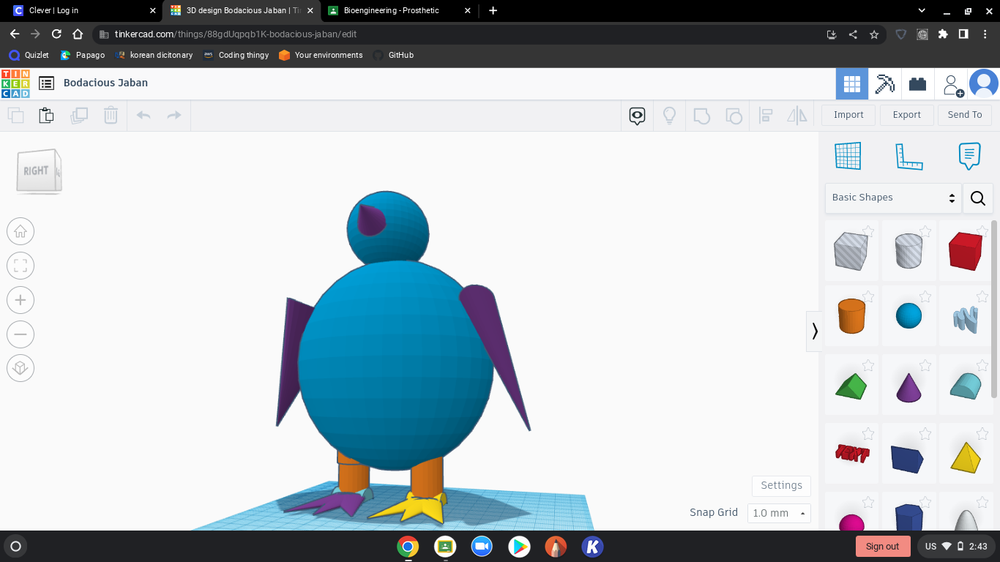
10/7/2022: I celebrated my mom's birthday this week and went to eat some pork cutlet for dinner. I paid for it all so now I got no money. I also had a Korean and Science test this week. I kinda fogot to study, but I think I did pretty good. In Itro to Engineering we dissected a computer. It wasn't that fun because I had to do everything.
10/14/2022: Today is the end of the Quater and I'm pretty happy with my grades. I got like 1 or 2 B's and everything else was a A. Since today is a minimum day I am going to eat with my friends after school and maybe go to my friends house after. Highschool has been good so far and I hope that I can keep my grades up.
10/20/2022: This week in Engineering we started aerospace engineering and started a project involving a bottle rocket. My bottle rocket is gonna have coke and mentos inside. I hope the bottle rocket will go pretty far. I also did a skit in Korean and my teacher said it was pretty good so I was happy about it. This week is alo HOCO week, but I don't think I'm gonna go.
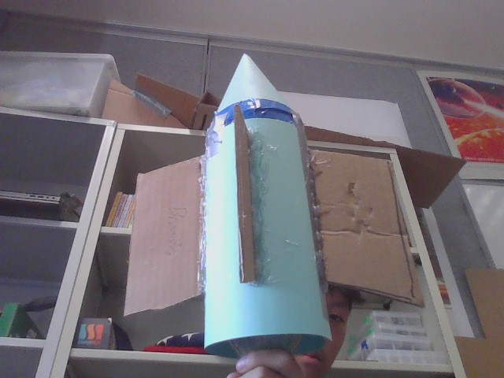
10/24/2022: Last Friday we launched our bottle rockets and most of them failed. Most of the bottle rockets barely went anywhere and splahed water everywhere. Mr. Poole let me put air into the bottle and compress the air in the bottle. My groups bottle went kinda far because the coke and mento.
11/4/2022: This week we have started to learn what electrical engineering is. Mr. Poole told us to go on tinkcad and make some circuts using a breadboard. I didn't really understood at first, but know I know what to do. We also learned what Ohm's Law is. Ex: R=V/I, V=R*I, and I=V/R. I don't think electrical engineering is my thing, it's kinda compilcating.
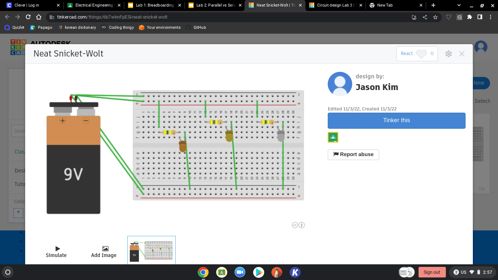
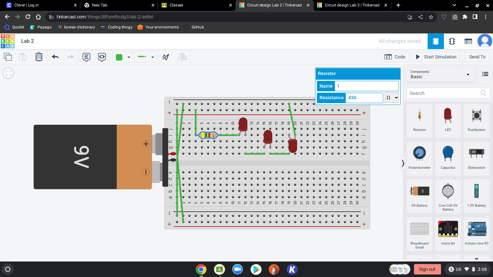
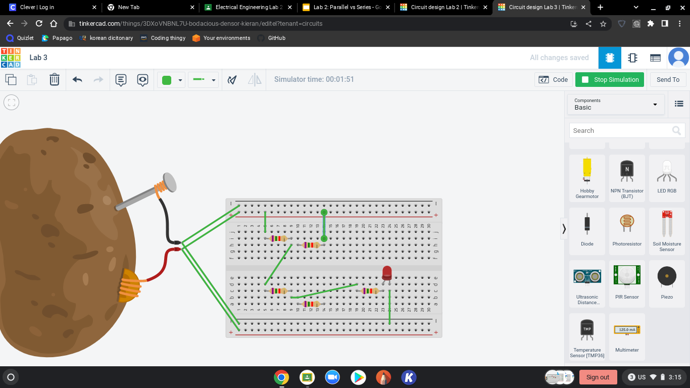
11/10/2022: We started working on breadboards turning on Leds and how to use resistors. I also learned how to do parallel and series. We also used a multimeter to measure the voltage of the resistors and breadboard. During challenge day we had a choice to either have math class instead of engineering or count from 1 to 1 million.
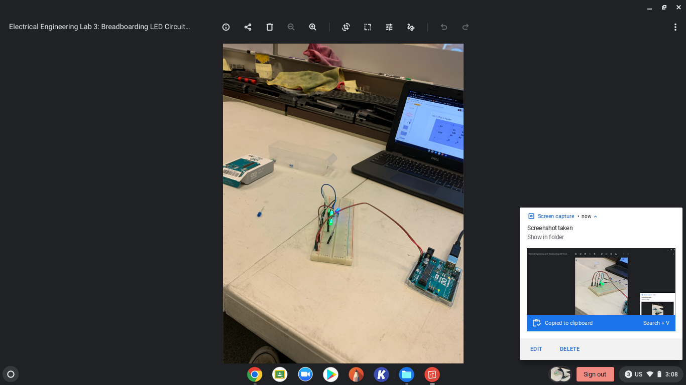
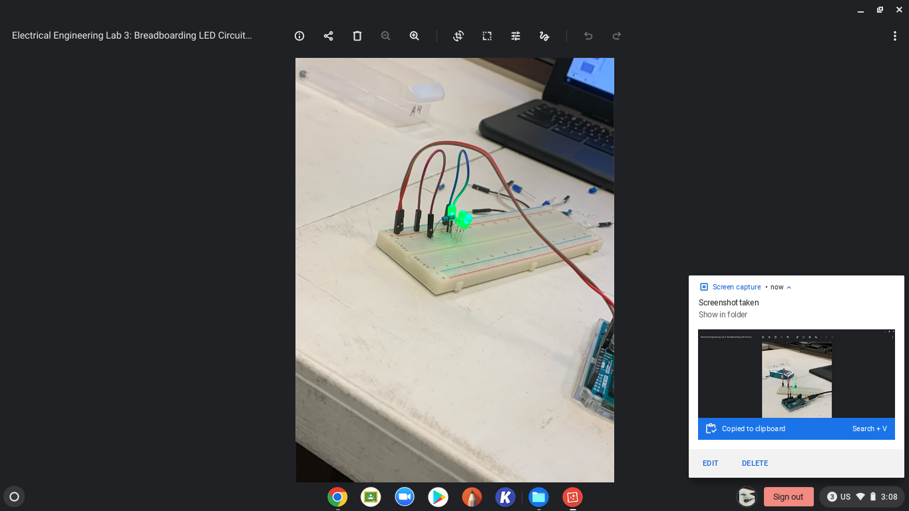
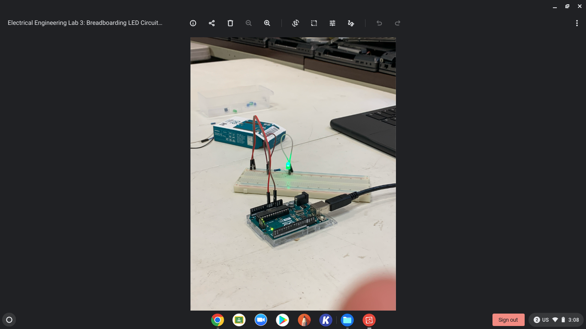
Challenge Day
11/18/2022: This week we did some coding for the arduino and made the LEDs turn off and on. For this weeks Challenge Day we had to find a situation where we had to a find a solution to clean the water so it wouldn't give people cancer. Me and my partner decided to put a geyser in the water to clean the bromide out of the water. This Thanksgiving break I'm going to my friends house and stay over. My family doesn't really do anything for Thanksgiving.
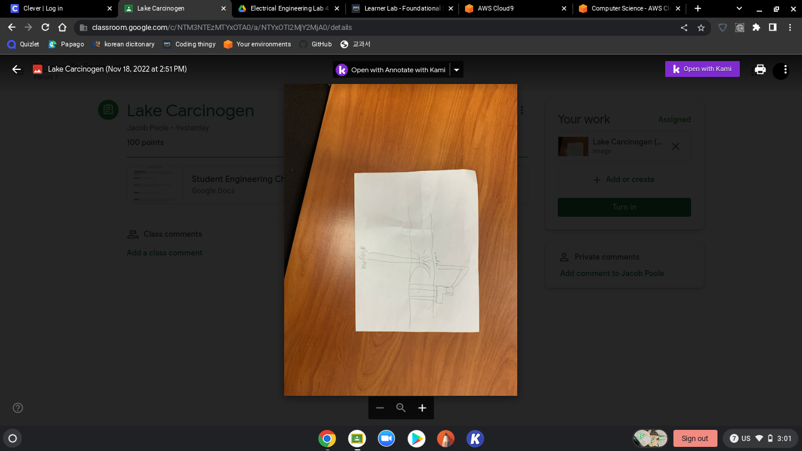
Challenge Day 11-18-2022
12/2/2022: We stated our Final Project for engineering class. The final was to make a bridge out of 20 pasta straws. Our team had stated making our first bridge and we are about to test the bridge.
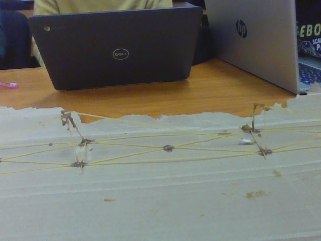
12/12/2022: The first bridge we had built broke, so we made a bridge that was a line. It was a pile of spaghetti guled to gether and was 21.9kg and held 2.5 pounds. When we tested out 2nd bridge it had broke. We have now started our 3rd bridge and we are almost done buidling it.
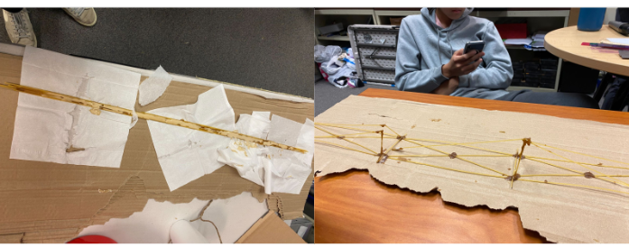
12/15/2022: The 3rd bridge we had made keeps on breaking so we decided to make another bridge incase the 3rd one breaks. This week is our 7th period final and I think our group is ready to present. My other classes have been going good so far but I need to study alot if I want to pass my classes.
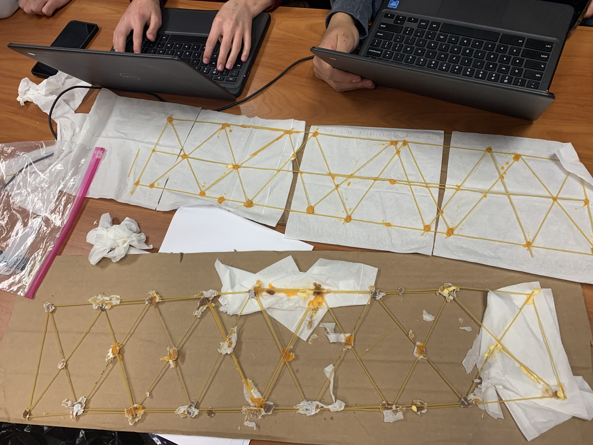
1/13/2023: We started Business Engineering and had to come up with a product that we had to advertise like shark tank. We had to make up a back story and make up prices of these objects.
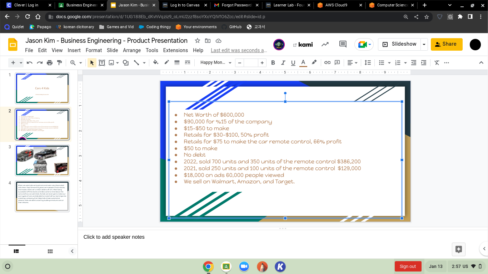
1/19/2023: We finsihed the Shark Tank Presentation today and it was interesting to do. We learned what revenue, profit, and equity was. We also had to propose offers with the people presenting.
Shark Tank
1-27-2023: On Monday we learned what Chemical Engineering is and made Oobleck. It was very fun punching it. On Wednesday we started out 6 week engineering project. Nick and I choose arduino car for our porject. The first step was to make a 6 page document about our project. Next we are going to design what our project will be like. Arduino Car


 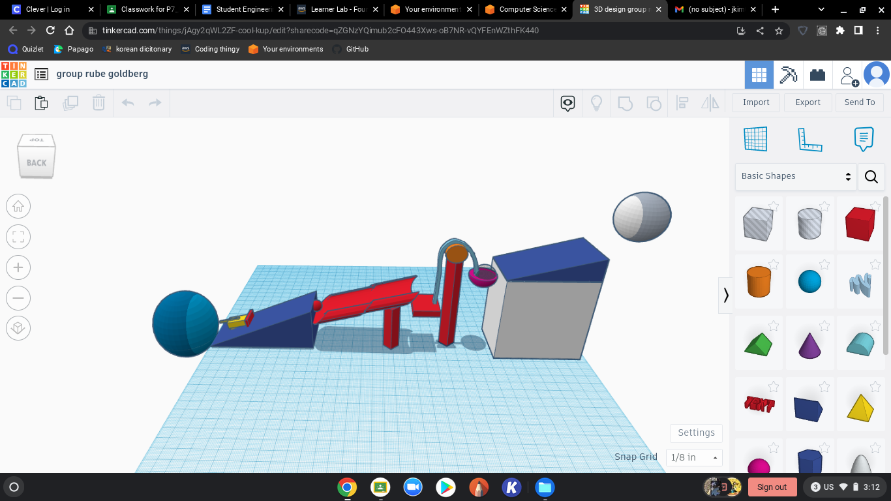
PDF
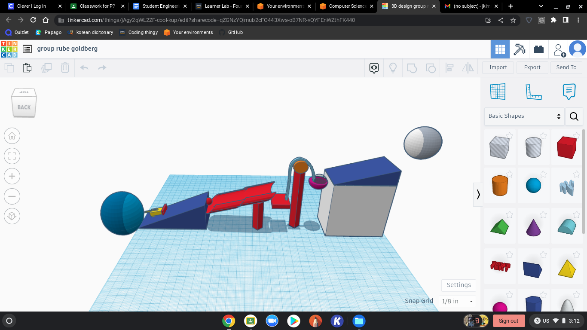
PDF